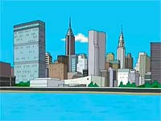

The primary setting of Family Guy is Quahog, a fictional city in Rhode Island that was founded by Peter's ancestor, Griffin Peterson. MacFarlane resided in Providence during his time as a student at Rhode Island School of Design, and the show contains distinct Rhode Island landmarks similar to real-world locations.[9][10] MacFarlane often borrows the names of Rhode Island locations and icons such as Pawtucket and Buddy Cianci for use in the show. MacFarlane, in an interview with Providence's Fox affiliate WNAC-TV, stated that the town is modeled after Cranston, Rhode Island.